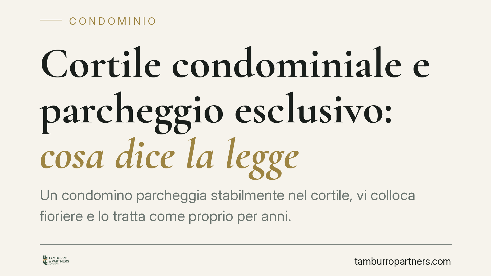

Cortile condominiale e parcheggio esclusivo: cosa dice la legge
Un condomino parcheggia stabilmente nel cortile, vi colloca fioriere e lo tratta come proprio per anni. Ne diventa proprietario? Una recente pronuncia di merito ribadisce di no: il cortile si presume parte comune e l'uso prolungato, anche se tollerato, non fonda un diritto esclusivo. Vediamo perché e cosa possono fare condomini e amministratori.

Il fatto
Alcuni proprietari di negozi al piano terra utilizzavano in via continuativa una porzione del cortile condominiale: parcheggio dei veicoli, posizionamento di fioriere e arredi, occupazione di fatto dello spazio a danno degli altri condomini. Sostenevano che l'uso prolungato nel tempo avesse consolidato un diritto esclusivo sull'area.
Il giudice ha respinto la tesi e ordinato la liberazione del cortile, riaffermando principi consolidati in materia condominiale.
Inquadramento normativo
Il punto di partenza è l'art. 1117 del Codice Civile, che elenca le parti comuni dell'edificio. Tra queste rientrano i cortili, salvo che un titolo (un atto di acquisto, un regolamento contrattuale, una divisione) disponga diversamente. Si tratta di una presunzione di comunione: la legge presume che il cortile appartenga a tutti i condomini, e chi afferma il contrario deve dimostrarlo con un titolo scritto. Non basta il comportamento di fatto.
L'art. 1102 c.c. disciplina l'uso della cosa comune. Ciascun condomino può servirsene, anche in modo più intenso rispetto agli altri, a due condizioni: non alterare la destinazione del bene e non impedire agli altri partecipanti di farne pari uso. Qui sta la linea di confine decisiva.
La distinzione che fa la differenza
Un conto è l'uso più intenso della cosa comune (ad esempio parcheggiare occasionalmente, quando resta spazio per gli altri): è lecito nei limiti dell'art. 1102 c.c. Altro conto è l'appropriazione esclusiva, cioè l'occupazione stabile di una porzione di cortile che sottrae agli altri condomini la possibilità di usarla. Questa non è uso lecito: è una compressione del diritto altrui.
Parcheggio fisso, fioriere e arredi che delimitano un'area "propria" non rappresentano un uso più intenso, ma una vera e propria sottrazione dello spazio comune.
Perché l'uso prolungato non attribuisce la proprietà
Molti ritengono che occupare un'area per anni faccia maturare l'usucapione. In teoria l'art. 1158 c.c. consente di acquistare la proprietà di un bene immobile con il possesso continuato per vent'anni. Ma il possesso rilevante ai fini dell'usucapione deve essere esercitato come proprietario e in modo inequivoco, con atti che manifestino chiaramente la volontà di escludere gli altri.
Due elementi ostano a questo risultato nel cortile condominiale:
- La tolleranza degli altri condomini: se l'uso è stato consentito o semplicemente non contestato per quieto vivere, manca il possesso idoneo. Gli atti compiuti per mera tolleranza non fondano usucapione.
- L'ambiguità dell'uso: parcheggiare o collocare oggetti è spesso compatibile con un semplice godimento della cosa comune. Per invertire il titolo occorrono atti univoci, noti agli altri condomini, che manifestino l'intenzione di possedere in via esclusiva (il cosiddetto *interversio possessionis*).
In assenza di questi presupposti, l'uso prolungato resta ciò che è: godimento della cosa comune, che non si trasforma in proprietà.
Implicazioni pratiche
Per chi utilizza stabilmente una porzione di cortile, la lezione è chiara: l'occupazione di fatto, anche ventennale, è esposta al rischio di un ordine di liberazione, con eventuale condanna alle spese e al ripristino.
Per gli altri condomini e per l'amministratore, l'inerzia non è neutra. Più l'occupazione si protrae indisturbata, più il condomino può cercare di costruire, su quel comportamento, pretese fondate sul possesso. Documentare la contestazione è quindi essenziale.
Cosa fare in concreto
- Condomini: contestate per iscritto l'occupazione esclusiva non appena ne avete conoscenza, conservando prova della comunicazione.
- Proprietari al piano terra: verificate il vostro titolo di acquisto e il regolamento condominiale prima di considerare "vostra" un'area del cortile; in mancanza di titolo, l'uso resta soggetto all'art. 1102 c.c.
- Amministratore: sollevate la questione in assemblea, richiedete una delibera che autorizzi la diffida formale e, se necessario, l'azione giudiziale per la liberazione dell'area.
- Tutti: raccogliete documentazione fotografica datata e verbali che attestino la contestazione, così da escludere il carattere pacifico e indisturbato del possesso.
È opportuno intervenire tempestivamente, perché l'inerzia prolungata può agevolare pretese basate sul possesso.
Disclaimer
Contributo informativo a cura di Tamburro & Partners Avvocati. Non costituisce parere legale.
Ogni condominio ha una storia a sé.
Se gestisci un'amministrazione e vuoi un confronto su una specifica questione condominiale, scrivi allo studio. Ti rispondiamo entro un giorno lavorativo.